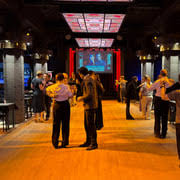
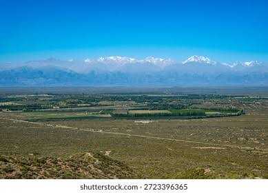

16 jours pour danser et se reconnecter
Ce voyage de 16 jours propose une approche différente du tango : non seulement comme danse, mais comme chemin de bien-être et d'expression. À Buenos Aires, vous participerez à des cours et milongas dans une ambiance intime. Puis direction Mendoza pour prolonger l'expérience au milieu des vignobles et des Andes.
Le voyage en un coup d'œil
🧠 Approche thérapeutique
- Tango comme outil d'expression
- Lâcher-prise et connexion à soi
- Ateliers émotions & mouvement

💃 Buenos Aires intime
- Cours avec professeurs spécialisés
- Milongas de quartier authentiques
- Ambiance douce et bienveillante
🍷 Mendoza & Vignobles
- Immersion dans les bodegas
- Dégustation consciente de Malbec
- Rythme lent et contemplation

🏔️ Les Andes
- Respiration et altitude
- Silence des montagnes
- Panoramas à couper le souffle
L'Abrazo : au cœur du tango
Bien plus qu'un pas de danse, l'étreinte du tango est un espace de confiance, d'écoute et de reconnexion à soi et à l'autre.
Votre itinéraire de 16 jours
Buenos Aires · L'écoute du corps (J1 à J8)
Arrivée & Installation douce
Accueil à Ezeiza. Installation dans un hébergement calme à Palermo ou San Telmo. Temps libre pour s'acclimater.
Atelier "Tango & Émotions"
Premier atelier centré sur l'abrazo (l'étreinte). Apprendre à écouter son corps et à entrer en connexion avec l'autre.
Milonga intime & Écriture
Matinée d'écriture expressive. Après-midi : visite douce de Recoleta. Soirée : immersion dans une milonga de quartier.
Journée de respiration
Excursion au Delta du Tigre. Balade en bateau, silence, observation de la nature. Une journée pour laisser le mental se reposer.
Delta du Tigre & Nature
Journée complète dans les îles du Delta. Kayak, méditation au bord de l'eau et déconnexion totale.
Atelier "Mouvement & Liberté"
Travail sur le déplacement dans l'espace et la liberté du corps. Après-midi libre pour flâner dans les cafés littéraires.
San Telmo & Antiquaires
Découverte du marché de San Telmo. Afternoon tea dans un salon de thé historique. Soirée : tango-show intimiste.
Vol vers Mendoza
Matinée libre. Vol vers Mendoza. Installation dans une bodega-hôtel au calme, entouré de vignes. Soirée de partage.
Mendoza · La reconnexion à la nature (J9 à J16)
Vignoble & Méditation
Matinée : méditation guidée au milieu des vignes. Après-midi : visite d'une bodega artisanale et dégustation consciente de Malbec.
Les Andes & le silence
Excursion vers la Cordillère des Andes. Pont de l'Inca. Face à l'immensité des montagnes, expérience de silence et de contemplation.
Andes & Randonnée douce
Randonnée légère dans les contreforts andins. Respiration, altitude et panoramas à couper le souffle. Pique-nique au grand air.
Atelier "Tango & Nature"
Danser en plein air, au milieu des oliviers ou des vignes. Un atelier unique pour fusionner le mouvement du tango avec l'énergie de la nature.
Vallée de Uco
Excursion dans la vallée de Uco, cœur viticole de Mendoza. Paysages grandioses et dégustation dans une bodega de luxe.
Temps libre & Soins
Journée entièrement libre. Possibilité de soins (spa, thermalisme), de massage, ou simplement de repos pour intégrer l'expérience.
Retour à Buenos Aires
Vol retour vers Buenos Aires. Cercle de partage final pour exprimer ses ressentis. Dîner d'adieu dans un restaurant de Palermo.
Départ
Petit-déjeuner. Transfert à l'aéroport d'Ezeiza. Vol retour, avec le corps apaisé et l'esprit éclairci.
Mendoza, terre de sérénité
Entre vignobles à perte de vue et sommets andins, Mendoza offre le cadre parfait pour ralentir, contempler et se retrouver.
Formules & État d'esprit
🎒 Formule Autonomie
- Hébergements sélectionnés pour leur calme
- Ateliers tango-thérapie en petits groupes
- Road-book "slow travel"
✨ Formule Sérénité
- Tout le programme Autonomie
- Accompagnement par un guide francophone
- Facilitation des cercles de partage
🧘 État d'esprit
- Aucun prérequis en danse nécessaire
- Ouverture d'esprit et bienveillance
- Respect du rythme de chacun
🎒 Équipement
- Tenue confortable pour danser
- Carnet pour l'écriture expressive
- Chaussures de marche pour les Andes
Bon voyage intérieur en Argentine !
16 jours · Tango · Bien-être · Vignobles · Andes
Parlons de votre projet →